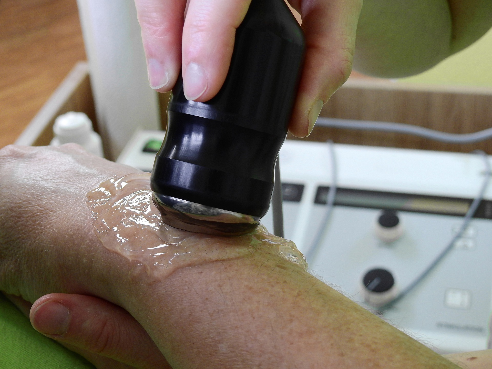

TENS is an abbreviation of Transcutaneous Electrical Nerve Stimulation.
A tens machine stimulates your nerves via an electrical current through your skin. A TENS machine is an electronic medical device. A TENS machine may assist you in modest short-term pain relief.

Therapeutic Ultrasound is used to provide deep heating to soft tissues in the body. The effect of ultrasound via an increase in local blood flow can be used to help reduce local swelling and chronic inflammation, and, according to some studies, promote bone fracture healing.
